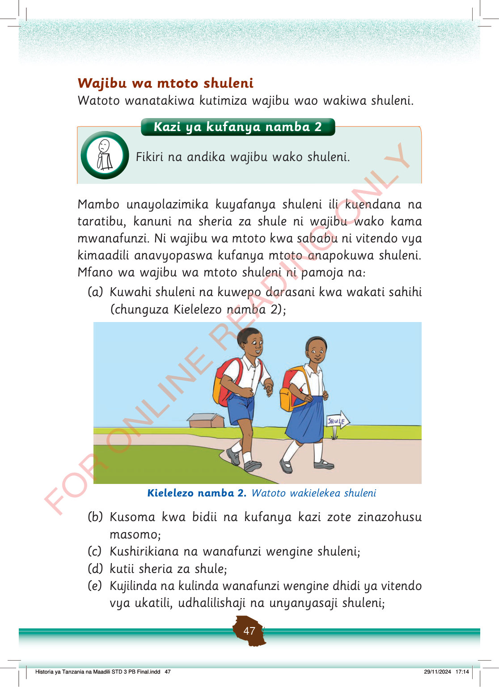

Wajibu wa mtoto shuleni
Watoto wanatakiwa kutimiza wajibu wao wakiwa shuleni.
Mfano wa wajibu wa mtoto shuleni ni pamoja na:
Mambo unayolazimika kuyafanya shuleni ili kuendana na taratibu, kanuni na sheria za shule ni wajibu wako kama mwanafunzi.
Ni wajibu wa mtoto kwa sababu ni vitendo vya kimaadili anavyopaswa kufanya mtoto anapokuwa shuleni.
(a)
Kuwahi shuleni na kuwepo darasani kwa wakati sahihi
(chunguza Kielelezo namba 2);
Watoto wawili wanakwenda shule wakiwa wamebeba mabegi yao. Karibu nao kuna kibao kinachoonyesha njia ya shule.
Kielelezo namba 2. Watoto wakielekea shuleni
(b)
Kusoma kwa bidii na kufanya kazi zote zinazohusu masomo;
(c)
Kushirikiana na wanafunzi wengine shuleni;
(d)
kutii sheria za shule;
(e)
Kujilinda na kulinda wanafunzi wengine dhidi ya vitendo vya ukatili, udhalilishaji na unyanyasaji shuleni;
Kazi ya kufanya namba 2: Fikiri na andika wajibu wako shuleni.
Kazi ya kufanya namba 2
Fikiri na andika wajibu wako shuleni.